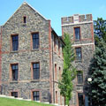

|  |
Hancock Center Close
Built in 1865
Office of the current College President |
The Hancock Center is named after the lead donor and vice chair of the Marist Board of Trustees, Ellen Hancock, and her husband Jason. The 57,000 square foot academic center opened in 2011 and houses the School of Computer Science and Mathematics, faculty offices, nine classrooms, six conference/seminar rooms, and three computer labs. In addition, the Marist College Institute for Public Opinion (MIPO), the International Programs Office, and a small cafe is also located in the Hancock Center. The $35 million Center includes the Center for Collaborative and On-Demand Computing, the Institute for Data Center Professionals, and the IBM-Marist Joint Study Program which features some of the most advanced technology available. The Hancock Center’s look was inspired by the original buildings acquired with the Bech Estate: The Greystone, Kieran Gatehouse, and St. Peter’s cottage. Designed by Robert A. M. Stern Architects, LLP, the Center also reduces environmental impact with energy efficient lighting and a green roof that absorbs and filters fain water.